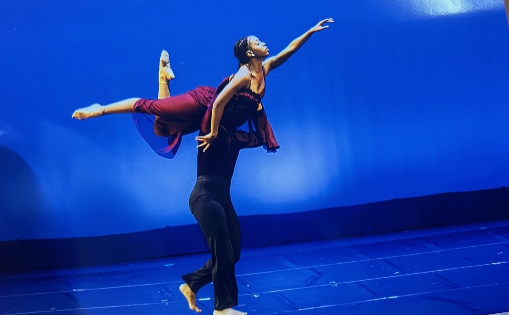
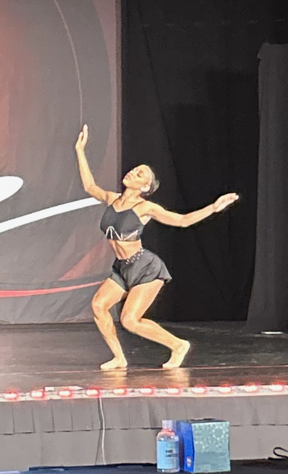
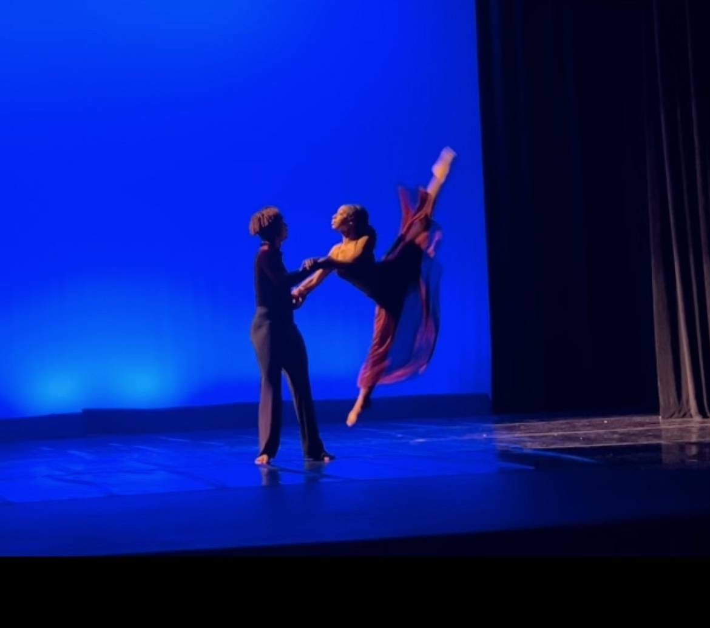

My name is Chloe
I was born here, unfortunately on July 9th. I've been raised in the same house my entire life. I live with my mom and see my dads on some weekends. I'm now attending New Tech at Hilliside going onto my 10th grade year here. I think it's not that I don't like the school but more so the people I don't like. I'm learning to aceept and understand people as they're and not to jugde them taking into account that everyone acts and carries themselves differently dependent on the way they were raised, or how their doing internally.Which has nothing to do with you because as people we naturally project.
I secretly like to sing,and act but a way I cope with things and show who I am overall is dance.Ive been dancing since Iwas 3.I started at walltown then I went to empower,went back to walltown and countined durham school of ballet arts. I left hillisde dance company concidering the fact I wasn't learning anything and it was not benifiting me in any time of way.
I do nextlevel on the side,only because it's different from everying else I do and I want to branch out and try new things. I tried track, I hated it. I did gymnastics but it just wasn't my thing. So I decided I want to persue dance.
I plan on having my own company and starting as ealry as popssible so me and my mom decided we would get a LLC now and switch it over and put it in my name when I turn 18. I'm going to try out for UNCSA where I would go and stay on campus like collge my 11 grade year and use this year to get more exprience.I'm also thinking about the Debby Alan school in Los angeles.
Ive tought younger kids last year and I plan on doing that this year to also make more income. I want to run my bussiness while also getting the exprience I need.
Dance is important to me and plays a big role in my life not only because I have been doing it my whole life,but because I fell inlove with being able to tell a story without words. Its a form of expression,you can express exatcly who you are through it. I feel that dancers dont get enough credit. The amount of time, hours spent in a studio or even at home for a 2 minute peice is honestly sad. And to make it look effortlessly at that. Which is why I want to get the exprince but more so have my own bussiness and make my own income, dancers on companys get paid around 40,000 a year or even less. And if I start ealry now I can be finicnially stable and able to provide for myself at a younger age. Which is my goal.
Surrounding yourself with the right people are important.The people you choose hang around have an impact on you weather that is positive or negative.
Talk to people who have the same intrest and goals as you.It'll inpire you to accomplish those things and have a postive influence on you. Having a small cirle overall is way more peaceful in my opinion.I often stay to myslef for the most part and talk to who I choose to. And thats okay.
 Sometimes I think we talk about what we want to do and what we want to accomplish,but not actively try to do something about it or change.I know inorder for me to do what I want to do in life and acomplish my goals I need to change my habits now. That could be eating healtheir,excrising more etc. And im working on that.
I also grew up around a religous family which I am thankful for.They have pushed me closer to God and I've had my own exprinces with him that am also thankful for.I still sin all the time but I belive what he gave me is a true gift. And I can bless others with it.My end goal is to help others and serve his plan.Im thankful that I can walk,or even move my body.He woke up day after day so I know hes not done with me yet.
I was fortunate to grow up in a religious family. Their influence has drawn me closer to God, and I've had personal experiences with Him that I'm grateful for. I'm not perfect; I sin regularly, but I believe He has gifted me abundantly. My ultimate goal is to help others and serve His plan. I am grateful that I can walk and move freely. His gifts to me renew every day, reminding me that He still has plans for me.
I wanna help others,weather that be finacilly,physically or evem mentally.Even if I dont have much yet.